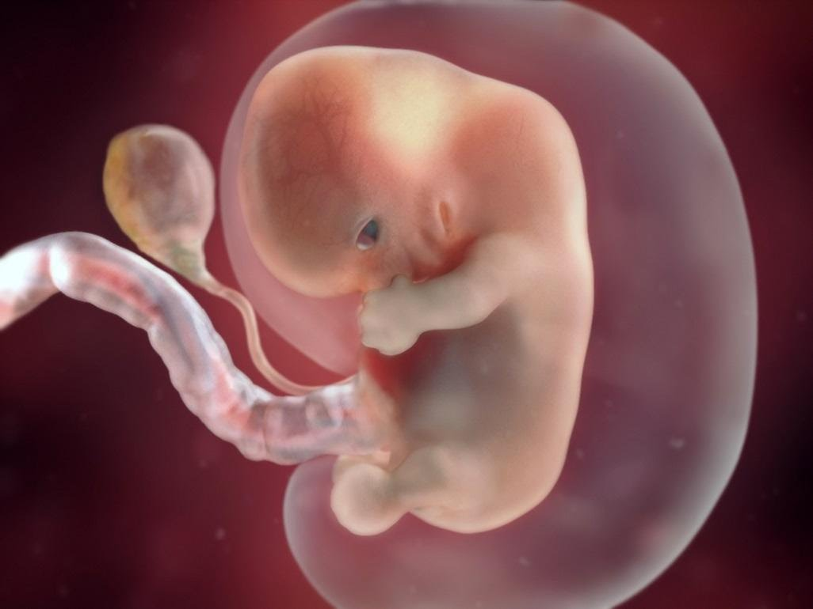
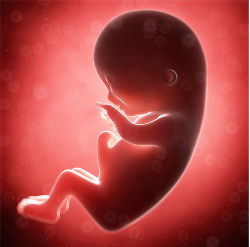

Segundo mes
- En esta importante etapa del embarazo, se forman todos los sistemas y órganos principales del cuerpo, aunque no se desarrollan completamente. Alrededor de las seis semanas de embarazo, el embrión flota en una burbuja llena de fluido, que se convertirá en el saco amniótico. Paralelamente al desarrollo del bebé, ha crecido el saco vitelino, que se asemeja a un globo que está pegado a él. El saco vitelino tiene la misión de proporcionar al embrión todos los nutrientes que necesita hasta que la placenta esté totalmente desarrollada. La placenta puede empezar a funcionar por sí sola hacia la semana 12 de gestación.

segundo mes
Cambios físicos en la embarazada durante el tercer mes
Has llegado al tercer mes de embarazo y has superado la etapa de riesgo de aborto. Habrás engordado de 900 g a 1.300 g, un 10 % del peso total del embarazo. Tu útero tiene ahora el tamaño de un pomelo (durante el embarazo aumentará 20 veces su peso y 14 veces su tamaño), es demasiado grande y empuja por encima de tu hueso pélvico. Los nutrientes de tu sangre fluyen al bebé por tu placenta, que actúa como sustituto de pulmones, hígado y riñones para él. Es posible que notes un cosquilleo en el pecho y que la areola adquiera una coloración más oscura.

tercer mes